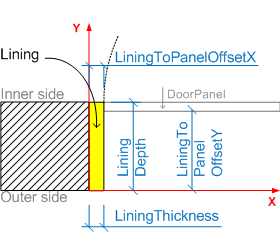
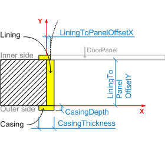
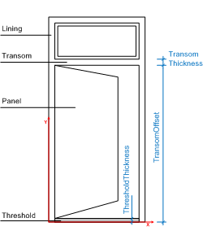

7.1.3.1 IfcDoorLiningProperties
7.1.3.1.1 Semantic definition
The door lining is the frame which enables the door leaf to be fixed in position. The door lining is used to hang the door leaf. The parameters of the door lining define the geometrically relevant parameter of the lining.
The IfcDoorLiningProperties are included in the list of properties of IfcDoorType.HasPropertySets. More information about the door lining can be included in the same list of the IfcDoorType using another IfcPropertySet for dynamic extensions.
The IfcDoorLiningProperties does not hold its own geometric representation. However it defines parameters which can be used to create the shape of the door type (which is inserted by the IfcDoor into the spatial context of the project) as described below. The parameters of the IfcDoorLiningProperties define a standard door lining, including (if given) a threshold and a transom. The outer boundary of the lining is determined by the 'Profile' shape representation assigned to the IfcDoor, which inserts the IfcDoorType.

The lining is applied to the left, right and upper side of the opening reveal. The parameters are:
- LiningDepth, if omitted, equal to wall thickness - this only takes effect if a value for LiningThickness is given. If both parameters are not given, then there is no lining.
- LiningThickness
- LiningToPanelOffsetX
- LiningToPanelOffsetY

The lining can only cover part of the opening reveal.
- LiningOffset, given if lining edge has an offset to the x axis of the local placement.

The lining may include a casing, which covers part of the wall faces around the opening. The casing covers the left, right and upper side of the lining on both sides of the wall. The parameters are:
- CasingDepth
- CasingThickness

The lining may include a threshold, which covers the bottom side of the opening. The parameters are:
- ThresholdDepth, if omitted, equal to wall thickness - this only takes effect if a value for ThresholdThickness is given. If both parameters are not given, then there is no threshold.
- ThresholdThickness
- ThresholdOffset (not shown in figure), given, if the threshold edge has an offset to the x axis of the local placement.

The lining may have a transom which separates the door panel from a window panel. The transom, if given, is defined by:
- TransomOffset, a parallel edge to the x axis of the local placement
- TransomThickness
The depth of the transom is identical to the depth of the lining and not given as separate parameter.
{ .change-ifc2x4}
7.1.3.1.2 Entity inheritance
7.1.3.1.3 Attributes
| # | Attribute | Type | Description |
|---|---|---|---|
| IfcRoot (4) | |||
| 1 | GlobalId | IfcGloballyUniqueId |
Assignment of a globally unique identifier within the entire software world. |
| 2 | OwnerHistory | OPTIONAL IfcOwnerHistory |
Assignment of the information about the current ownership of that object, including owning actor, application, local identification and information captured about the recent changes of the object. |
| 3 | Name | OPTIONAL IfcLabel |
An optional name for use by the participating software systems or users. For some subtypes of IfcRoot the insertion of the Name attribute may be required. This would be enforced by a where rule. |
| 4 | Description | OPTIONAL IfcText |
An optional description, provided to exchange informative comments. |
| IfcPropertyDefinition (2) | |||
| HasAssociations | SET [0:?] OF IfcRelAssociates FOR RelatedObjects |
Reference to the relationship IfcRelAssociates and thus to those externally defined concepts, like classifications, documents, or library information, which are associated with the property definition. |
|
| HasContext | SET [0:1] OF IfcRelDeclares FOR RelatedDefinitions |
Reference to the relationship IfcRelDeclares and thus to the IfcProject or IfcProjectLibrary. |
|
| IfcPropertySetDefinition (3) | |||
| DefinesOccurrence | SET [0:?] OF IfcRelDefinesByProperties FOR RelatingPropertyDefinition |
Reference to the relation to one or many object occurrences that are characterized by the property set definition. A single property set can be assigned to multiple object occurrences using the objectified relationship IfcRelDefinesByProperties. |
|
| DefinesType | SET [0:?] OF IfcTypeObject FOR HasPropertySets |
The type object to which the property set is assigned. The property set acts as a shared property set to all occurrences of the type object. |
|
| IsDefinedBy | SET [0:?] OF IfcRelDefinesByTemplate FOR RelatedPropertySets |
Relation to the property set template, via the objectified relationship IfcRelDefinesByTemplate, that, if given, provides the definition template for the property set or quantity set and its properties. |
|
| Click to show 9 hidden inherited attributes Click to hide 9 inherited attributes | |||
| IfcDoorLiningProperties (13) | |||
| 5 | LiningDepth | OPTIONAL IfcPositiveLengthMeasure |
Depth of the door lining, measured perpendicular to the plane of the door lining. If omitted (and with a given value to lining thickness) it indicates an adjustable depth (i.e. a depth that adjusts to the thickness of the wall into which the occurrence of this door style is inserted). |
| 6 | LiningThickness | OPTIONAL IfcNonNegativeLengthMeasure |
Thickness of the door lining as explained in the figure above. If LiningThickness value is 0. (zero) it denotes a door without a lining (all other lining parameters shall be set to NIL in this case). If the LiningThickness is NIL it denotes that the value is not available. |
| 7 | ThresholdDepth | OPTIONAL IfcPositiveLengthMeasure |
Depth (dimension in plane perpendicular to door leaf) of the door threshold. Only given if the door lining includes a threshold. If omitted (and with a given value to threshold thickness) it indicates an adjustable depth (i.e. a depth that adjusts to the thickness of the wall into which the occurrence of this door style is inserted). |
| 8 | ThresholdThickness | OPTIONAL IfcNonNegativeLengthMeasure |
Thickness of the door threshold as explained in the figure above. If ThresholdThickness value is 0. (zero) it denotes a door without a threshold (ThresholdDepth shall be set to NIL in this case). If the ThresholdThickness is NIL it denotes that the information about a threshold is not available. |
| 9 | TransomThickness | OPTIONAL IfcNonNegativeLengthMeasure |
Thickness (width in plane parallel to door leaf) of the transom (if provided - that is, if the TransomOffset attribute is set), which divides the door leaf from a glazing (or window) above. If the TransomThickness is set to zero (and the TransomOffset set to a positive length), then the door is divided vertically into a leaf and transom window area without a physical frame. |
| 10 | TransomOffset | OPTIONAL IfcLengthMeasure |
Offset of the transom (if given) which divides the door leaf from a glazing (or window) above. The offset is given from the bottom of the door opening. |
| 11 | LiningOffset | OPTIONAL IfcLengthMeasure |
Offset (dimension in plane perpendicular to door leaf) of the door lining. The offset is given as distance to the x axis of the local placement. |
| 12 | ThresholdOffset | OPTIONAL IfcLengthMeasure |
Offset (dimension in plane perpendicular to door leaf) of the door threshold. The offset is given as distance to the x axis of the local placement. Only given if the door lining includes a threshold and the parameter is known. |
| 13 | CasingThickness | OPTIONAL IfcPositiveLengthMeasure |
Thickness of the casing (dimension in plane of the door leaf). If given it is applied equally to all four sides of the adjacent wall. |
| 14 | CasingDepth | OPTIONAL IfcPositiveLengthMeasure |
Depth of the casing (dimension in plane perpendicular to door leaf). If given it is applied equally to all four sides of the adjacent wall. |
| 15 | ShapeAspectStyle | OPTIONAL IfcShapeAspect |
Pointer to the shape aspect, if given. The shape aspect reflects the part of the door shape, which represents the door lining. |
| 16 | LiningToPanelOffsetX | OPTIONAL IfcLengthMeasure |
Offset between the lining and the window panel measured along the x-axis of the local placement. |
| 17 | LiningToPanelOffsetY | OPTIONAL IfcLengthMeasure |
Offset between the lining and the door panel measured along the y-axis of the local placement. |
7.1.3.1.4 Formal propositions
| Name | Description |
|---|---|
| WR31 |
Either both parameter, LiningDepth and LiningThickness are given, or only the LiningThickness, then the LiningDepth is variable. It is not valid to only assert the LiningDepth. |
|
|
| WR32 |
Either both parameter, ThresholdDepth and ThresholdThickness are given, or only the ThresholdThickness, then the ThresholdDepth is variable. It is not valid to only assert the ThresholdDepth. |
|
|
| WR33 |
Either both parameter, TransomDepth and TransomThickness are given, or none of them. |
|
|
| WR34 |
Either both parameter, the CasingDepth and the CasingThickness, are given, or none of them. |
|
|
| WR35 |
The IfcDoorLiningProperties shall only be used in the context of an IfcDoorType. |
|
|
7.1.3.1.5 Concept usage
| Concept | Usage | Description | |
|---|---|---|---|
| IfcRoot (2) | |||
| Revision Control | General |
Ownership, history, and merge state is captured using IfcOwnerHistory. |
|
| Software Identity | General |
IfcRoot assigns the globally unique ID. In addition, it may also provide a name and description for the concept. |
|
| Click to show 2 hidden inherited concepts Click to hide 2 inherited concepts | |||
7.1.3.1.6 Formal representation
ENTITY IfcDoorLiningProperties
SUBTYPE OF (IfcPreDefinedPropertySet);
LiningDepth : OPTIONAL IfcPositiveLengthMeasure;
LiningThickness : OPTIONAL IfcNonNegativeLengthMeasure;
ThresholdDepth : OPTIONAL IfcPositiveLengthMeasure;
ThresholdThickness : OPTIONAL IfcNonNegativeLengthMeasure;
TransomThickness : OPTIONAL IfcNonNegativeLengthMeasure;
TransomOffset : OPTIONAL IfcLengthMeasure;
LiningOffset : OPTIONAL IfcLengthMeasure;
ThresholdOffset : OPTIONAL IfcLengthMeasure;
CasingThickness : OPTIONAL IfcPositiveLengthMeasure;
CasingDepth : OPTIONAL IfcPositiveLengthMeasure;
ShapeAspectStyle : OPTIONAL IfcShapeAspect;
LiningToPanelOffsetX : OPTIONAL IfcLengthMeasure;
LiningToPanelOffsetY : OPTIONAL IfcLengthMeasure;
WHERE
WR31 : NOT(EXISTS(LiningDepth) AND NOT(EXISTS(LiningThickness)));
WR32 : NOT(EXISTS(ThresholdDepth) AND NOT(EXISTS(ThresholdThickness)));
WR33 : (EXISTS(TransomOffset) AND EXISTS(TransomThickness)) XOR
(NOT(EXISTS(TransomOffset)) AND NOT(EXISTS(TransomThickness)));
WR34 : (EXISTS(CasingDepth) AND EXISTS(CasingThickness)) XOR
(NOT(EXISTS(CasingDepth)) AND NOT(EXISTS(CasingThickness)));
WR35 : (EXISTS(SELF\IfcPropertySetDefinition.DefinesType[1]))
AND
('IFC4X4.IFCDOORTYPE' IN TYPEOF(SELF\IfcPropertySetDefinition.DefinesType[1]));
END_ENTITY;